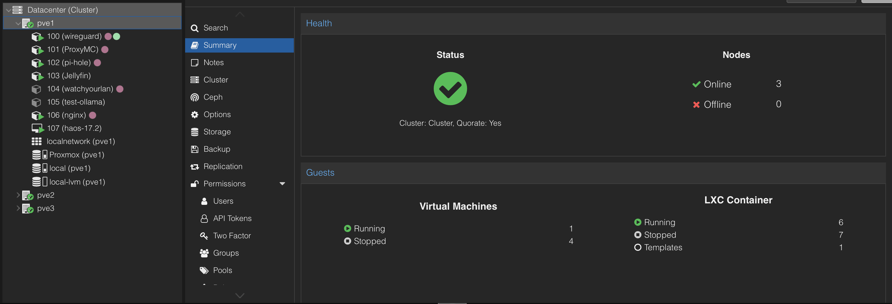

Proxmox VE est un hyperviseur open source qui me sert de laboratoire personnel à la maison. Mon installation repose sur un cluster Proxmox composé de plusieurs nœuds, accompagné d'un serveur de stockage TrueNAS à côté. Le cluster me permet de faire tourner de nombreuses machines virtuelles et conteneurs LXC, de répartir la charge entre les nœuds et de tester librement des configurations réseau, des serveurs et des services.
Les services que j'héberge :
Le matériel utilisé : essentiellement du matériel récupéré gratuitement (de vieux PC de plus de 4 ans) pour les nœuds du cluster, ainsi qu'un serveur TrueNAS pour le stockage.
Voici un aperçu :
